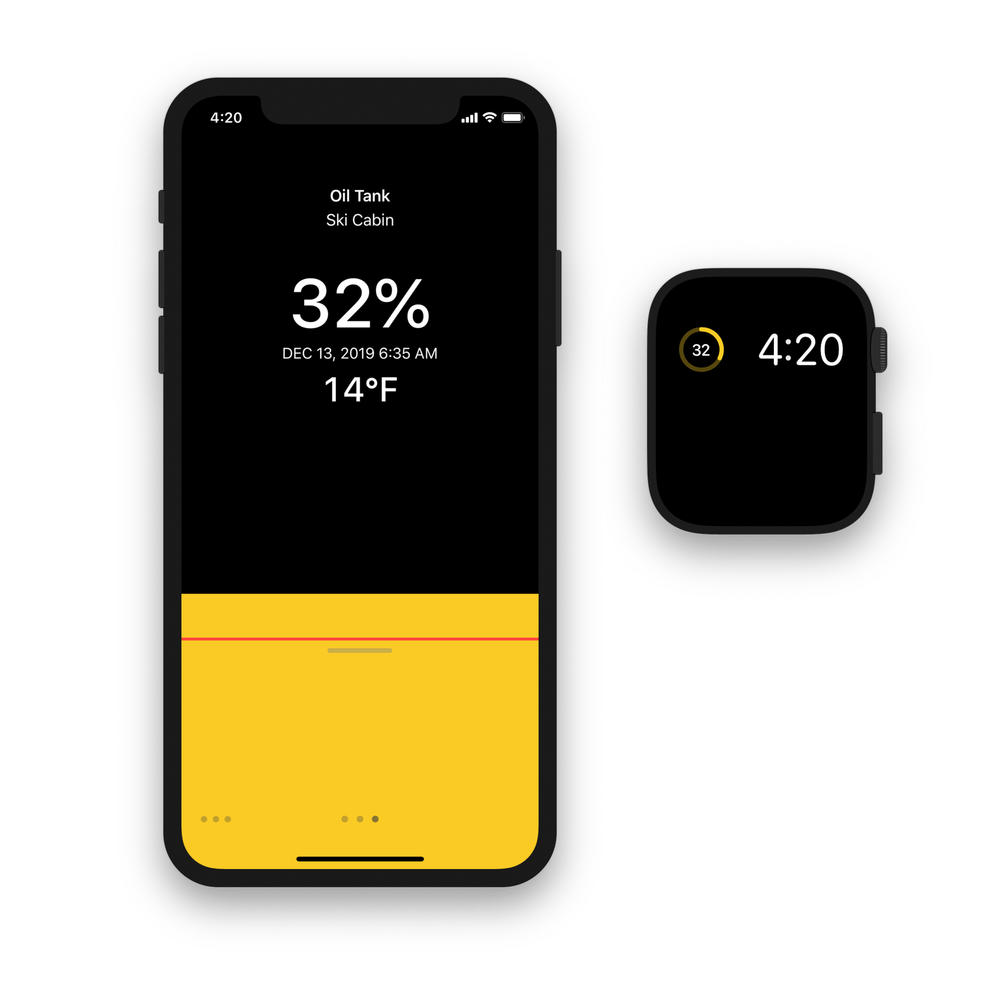

<!DOCTYPE html>
<title>Tanktop - Todd Heasley</title>
<meta name="viewport" content="initial-scale=1.0">
<meta name="apple-itunes-app" content="app-id=1452241428">
<link rel="apple-touch-icon" href="toddheasley.png">
<link rel="stylesheet" href="toddheasley.css">
<header>
    <h1><a href="index.html">Todd&nbsp;Heasley</a></h1>
</header>
<main>
    <h1>Tanktop</h1>
    <h2><time>2019 - 2020</time></h2>
    <figure><a href="tanktop.png"><span></span></a></figure>
    <p><a href="https://www.tankutility.com">Tank Utility</a> Propane Monitor for iPhone, iPad and Apple Watch</p>
    <p><a href="https://itunes.apple.com/us/app/apple-store/id1452241428"><span></span></a> <a href="https://github.com/toddheasley/tanktop"></a></p>
</main>
<footer>
    <p><a href="https://github.com/toddheasley">@toddheasley</a></p>
</footer>